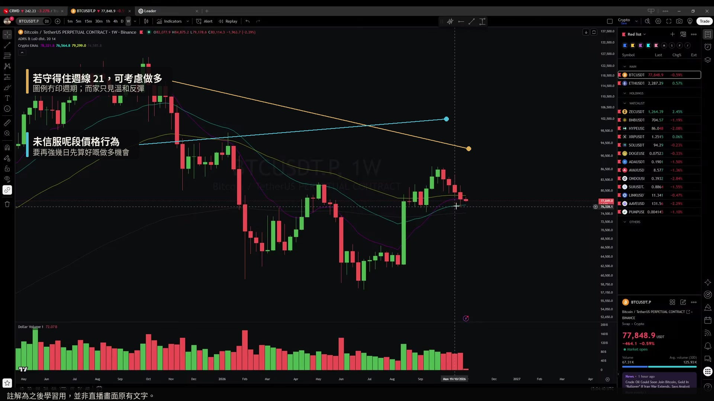
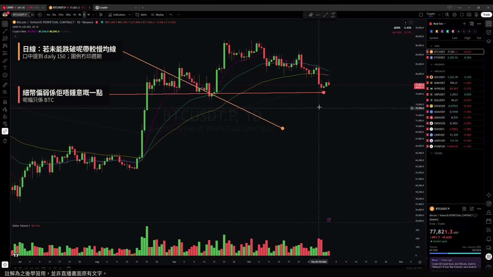

概要
條件未滿足之前，唔會因為回調到均線就做多
有人覺得 Bitcoin 回調入週線 21，歷史上偏多，但細幣已經把升幅交返出去。佢亦認為，若加密、尤其 Bitcoin 守得住 21 EMA，又或者未能跌破日線 150 或呢條 21，可以係很好嘅做多。但而家呢段回調只見非常溫和嘅反彈，價格行為未令他信服。若往後幾日加密找到支持並且表現轉強，先可能係很好嘅做多機會。另一點係，發問者提到細幣轉弱，佢同樣唔喜歡。
圖一 · 主圖
若守得住週線 21，先考慮做多
直播 1:53:00

原話
Yeah, I also think crypto, like especially Bitcoin, could be a really good long if they can hold the 21 EMA, like if they fail to break down from this, maybe the 150 on the daily or this 21. But right now I don't see a really strong actions on this pullback, on this dip. We're only getting a really mild bounce so far. So I'm not convinced, like the price action is not convincing me to long this one so far. But if somehow the cryptos found support and then to perform strongly in the next couple of sessions, maybe that will be a really great long opportunities. But yeah, another point is, I think you also mentioned it, is the smaller coins are showing weakness that I don't really like it. I just don't like it.
係，我都覺得加密，尤其 Bitcoin，若守得住 21 EMA，又或者未能跌破呢度——可能係日線 150，或者呢條 21——可以係很好嘅做多。但而家呢段回調、呢段下跌，我未見到好強嘅表現，暫時只係好溫和嘅反彈。所以我未信服，呢段價格行為未說服我做多。若加密之後找到支持，再在往後幾日表現轉強，或者先會係很好嘅做多機會。不過另一點，你都有提到，就係細幣顯弱，呢點我真係唔喜歡。
字幕把 “21 EMA” 聽成 “21 year”。本站按上下文同畫面更正。
點樣讀
條件有兩層：守得住週線 21、或者未能跌破日線 150；再加上要見到更強嘅反彈，而不只是溫和反彈。細幣轉弱，係額外嘅負面觀察。
圖二
日線：口中嘅 150 在較慢均線一帶
直播 1:53:08

原話
If they fail to break down from this, maybe the 150 on the daily or this 21. But right now I don't see a really strong actions on this pullback. The smaller coins are showing weakness that I don't really like it.
若未能跌破呢度，可能係日線 150，或者呢條 21。但而家呢段回調我未見到好強嘅表現。細幣顯弱，呢點我唔喜歡。
點樣讀
圖例冇印 150。註解只指較慢日線均線嘅位置。細幣本身冇出圖，只保留原話。
附註
注意事項
- 畫面係 BTCUSDT.P（Binance 永續）。YouTube 把 21 EMA 聽成 21 year。
- 圖例冇印均線週期。1:50 前後閃過 TEM，只係一句 “doing really nice”，唔單獨成科。2:04 中期選舉問答冇圖，唔獨立成科。